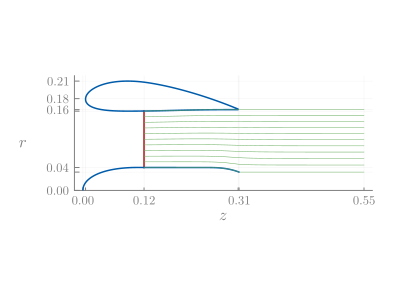

Visualization
There are several convenience plotting methods implemented in DuctAPE based on RecipesBase. In addition a general function for plotting the suite of available plots or animations is provided in the generate_plots function.
DuctAPE.generate_plots — Functiongenerate_plots(
::staticPlots, (or ::animatedPlots)
Plots,
ins,
outs;
save_path="",
static_file_type=".pdf",
suffix=nothing,
plot_geometry=true,
plot_pressure=false,
plot_velocity=false,
plot_boundary_layer=false,
plot_streamlines=false,
verbose=false,
kwargs...,
)Generate standard suite of plots or animations from input and output objects.
Arguments:
::staticPlots (or ::animatedPlots):Plots::: the Plots package namespaceins::NamedTuple: returned inputs fromanalyzefunctionouts::Vector{NamedTuple}: retured outputs fromanalyzefunction
Keyword Arguments:
save_path="": custom save pathstatic_file_type=".pdf": file type for static files (must be compatible with the desired backend)suffix=nothing: custom suffixes, if unused plots files will be numbered starting from 1.plot_geometry=true: flag to generate geometry plotplot_panels=false: flag to include markers indicating panel edges in geometry plotplot_pressure=false: flag to generate surface pressures plotplot_velocity=false: flag to generate surface velocities plotplot_boundary_layer=false: flag to generate boundary layer plotplot_streamlines=false: flag to generate streamlines plotverbose=false: print verbose statementskwargs...: arguments passed into the plot functions (Plots keyword arguments/defaults to be used in every plot)
The following generates animations across the given advance ratios.
Currently, plotting streamlines, especially animations, takes an exceptionally long time.
using Plots
# - Advance Ratio Range - #
advance_ratios = range(0.1, 2.0; step=0.01)
# - Calculate Vinfs - #
D = 2.0 * rotor.Rtip[1] # rotor diameter
n = RPM / 60.0 # rotation rate in revolutions per second
Vinfs = advance_ratios * n * D
# - Set Operating Points - #
operating_points = [deepcopy(operating_point) for i in 1:length(Vinfs)]
for (iv, v) in enumerate(Vinfs)
operating_points[iv].Vinf[] = v
end
# - Run Multi-point Analysis - #
outs, ins, success_flags = DuctAPE.analyze(
ducted_rotor,
operating_points,
reference_parameters,
DuctAPE.set_options(
operating_points;
boundary_layer_options=DuctAPE.HeadsBoundaryLayerOptions(;
model_drag=true, n_steps=1000, separation_criteria=3.0
),
);
return_inputs=true,
)
DuctAPE.generate_plots(
DuctAPE.animatedPlots(),
Plots, # Pass in the Plots namespace
ins,
outs;
plot_pressure=true,
plot_velocity=true,
plot_boundary_layer=true,
plot_streamlines=true,
save_path="../assets/",
static_file_type=".png",
(;
custom_defaults...,
# size=(600,400), # causes misalignment issues
cp_ylim=(-3, 3), # keyword argument to set ylim for cp plots
vtan_ylim=(0, 3), # keyword argument to set ylim for vtan plots
bl_ylim=(0.1, 0.25), # keyword argument to set ylim for boundary layer plots
)...,
)
nothing # hideAdditional arguments splatted into generate_plots are passed into Plots.plot directly as keyword arguments. In this case, custom_defaults happens to be the defaults associated with the plot formatting used in these docs. Any arguments passed in this way will override any options set in the plots recipes for all the plots. In the plots shown here, we have overridden the color palatte, but nothing else.
For some reason, specifying figure size causes misalignment with pressure and velocity distributions and the underlayed geometry.
